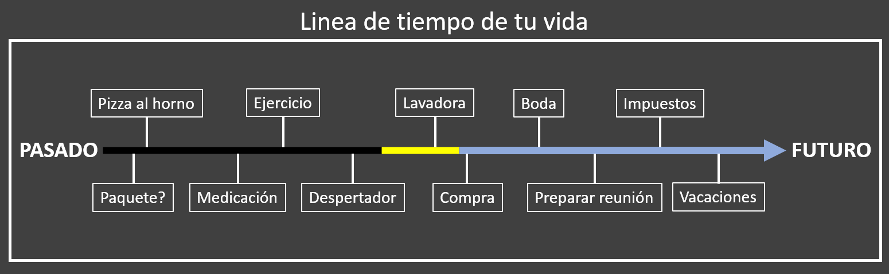

Este software, diseñado con flexibilidad en mente, le permite acceder a su información del pasado y organizar planes futuros. En lugar de preocuparte constantemente por estar al tanto de todo, tendrás un asistente privado confiable que No solo le recuerda lo que es importante, sino que también ayudará a programar su día. Esto liberá tu mente, permitiéndote disfrutar plenamente de la vida.
SECURElogBook prioriza dos aspectos clave: la gestión de datos y la seguridad. Ha sido meticulosamente elaborado para una entrada de datos rápida y sencilla, todo mientras asegura que opera sin conexión y no accede a tus archivos.
He estado trabajando en este proyecto durante más de 4 años. He dedicado mis ahorros y el 100% de mi tiempo en este proyecto durante los últimos 2 años. Como resultado, SECURElogBook ha evolucionado en una herramienta multifuncional de alta calidad.
A pesar de su diseño fácil de usar, algunas personas que actualmente están probando SECURElogBook tal vez no hayan captado completamente el potencial detrás de la idea. Eso es normal, porque diseñé SECURElogBook como una poderosa herramienta flexible. Eso significa que cuanto más conozca y más información agregue al programa, más le devolverá.
Permíteme explicarte qué es SECURElogBook.
SECURElogBook fue diseñado como una herramienta de datos potente y versátil.
Para hacer posible esta idea, he invertido mucho tiempo. Además, necesité crear la tecnología para hacerlo posible:
1. Sistema de registros en línea de tiempo que permite que el programa funcione como nosotros. Las personas y SECURElogBook almacenan información en una línea de tiempo. Eso te permite recordar todo lo que agregas al programa.
2. Sistema robusto de manejo de registros para hacer claro y fácil: agregar, ver, editar y buscar tu información.
3. Sistema de código de colores completo/tiempo para hacer posible almacenar información importante en un lenguaje visual que todos pueden entender.
4. Sistema de contadores de tareas que permite predecir tu carga de trabajo. También agrega un significado adicional a tus datos de lista, ya que los contadores de tareas están relacionados con los registros.
5. Sistema para recordar todo gracias a cómo ha sido diseñado SECURElogBook.
6. Valores de tiempos relativos para controlar completamente el tiempo, no más tiempo perdido tratando de entender tu información. SECURElogBook te da dinámicamente todo lo que necesitas.
7. Sistemas de ayuda y detalles de calidad para hacer todo lógico, fácil, rápido mientras se minimiza la posibilidad de errores. El diseño de SECURElogBook minimiza el tiempo requerido para introducir información, por lo que no dudarás en agregar tus ideas, listas de la compra, recordatorios, alarmas, ...
8. Listas dinámicas para cuando necesitas algo que no se puede describir como un solo registro. Esto permite crear listas de compras, recetas, manuales rápidos, ...
9. SEGURIDAD y PRIVACIDAD para tener la tranquilidad de que tus datos son tuyos.
10. Sistema de búsqueda poderoso que te permite encontrar todo, o agrupar información para que puedas sacar conclusiones y mejorar cada día.
Cuando combinas todos esos sistemas en un programa, como lo hace SECURElogBook, puedes hacer:
1. Alarmas.
2. Programa contador de tiempo de pantalla.
3. Aplicación para el seguimiento de la alimentación.
4. Recordatorios.
5. Aplicación de lista de compras.
6. Programa de control de gastos.
7. Registro de la ingesta de medicamentos.
8. Calendario.
9. Motivador personal.
10. Aplicación de seguimiento de entrenamiento.
11. Diario de salud mental.
12. Organizador personal.
13. Herramienta para recordarlo todo.
14. Programa de desarrollo de hábitos saludables.
15. Organizador de tareas del trabajo.
16. Herramienta para mejorar, ya que puede analizar sus datos con el sistema de búsqueda para aprender de ellos.
17. Diario personal.
¡Y mucho más!
Gracias al diseño de SECURElogBook todo es seguro, fácil, directo y rápido. Además, gracias a cómo se ha construido, nunca dudará en agregar lo que es importante para usted.
Una vez que está dentro de SECURElogBook, no lo olvidarás.
¡La aplicación para todo, justo al alcance de tu mano!
¡Asegúralo! ¡Con SECURElogBook!
1. Sistema de registros en línea de tiempo
Siempre estamos constantemente haciendo algo. Podemos planificar acciones futuras o hacer algo en este momento. Sin embargo, a medida que pasa el tiempo, todo se convierte en pasado. Por lo tanto, todo lo que hacemos está encapsulado dentro de nuestra línea de tiempo.SECURElogBook es un programa que puede registrar información en la misma línea de tiempo:

Todo lo que hacemos o planeamos siempre ocurre en un día y hora específicos:
Estas tareas, ideas, alarmas, recordatorios y más pueden verse como registros contenidos en la línea de tiempo de nuestra vida.
2. Sistema robusto de manejo de registros
Ahora sabemos que SECURElogBook puede almacenar información como nosotros, dentro de una línea de tiempo.Cómo podemos manejar la información para que sea rápida y fácil de introducir.
He creado un sistema simple y sólido para gestionar la información utilizando ventanas dedicadas:
Básicamente, he creado una estructura con 3 ventanas:
. Editor (verde azulado) para poder cambiar la información de un registro una vez que haces clic en él en la ventana principal (azul)
. Ventana principal (azul) para permitir ver y buscar tu información.
. Creador (verde) para introducir nueva información en el sistema.
2.1 Ventana principal (azul)
La ventana principal, con fondo azul, te permite ver y buscar información:

A = Contadores de tareas. Permiten ver las alarmas/tareas pendientes y la carga de trabajo para hoy y mañana.
B = Botón de fecha. Este botón moverá la lista principal al siguiente registro amarillo o al tiempo presente.
C = Ajustes. Acceso a: PIN de seguridad, ajustes de audio, formato de fecha, sistema para eliminar registros, sistema para importar/exportar datos y ventana de información.
D = Ayuda. Documentación de ayuda para esta ventana.
E = Botón de bloqueo de la aplicación.
F = Lista de registros. Aquí puedes encontrar todos tus datos. Haz clic en un registro para editarlo.
G = Último registro. Este botón abre el último registro que guardaste o copiaste.
H = Buscar. El sistema de búsqueda te permitirá encontrar y agrupar información para sacar conclusiones de tus datos.
I = Añadir registro. Abre la ventana verde de creación de registros.
J = Botón para detener alarma.
2.2 Ventana de Creador (verde)
Esta ventana tiene todo lo que necesitas para crear registros.
Una vez que la ventana de creador está abierta, el registro se establece por defecto como no completado y la hora siempre se establece en el tiempo actual, pasado.
Es crucial entender que la lista mostrará registros que coincidan o sigan el momento del registro que estamos creando (D y F). Además, cambiar los valores de tiempo (D) o fecha (F) actualizará dinámicamente la lista (K).

A = Botones buscadores de tiempo. Arriba, para seleccionar la hora del registro anterior. Abajo, para seleccionar la hora del siguiente registro. Estos botones igualan la hora del registro actual con el selecionado mediante los botones, primero de la lista. Una vez que ambos registros están en la misma hora puedes añadir o quitar tiempo para controlar perfectamente cuándo se activará el nuevo registro.
B = Texto del registro.
C = Botón de actualización de hora. Establecerá nuestro registro con la hora actual.
D = Valores de tiempo. Para establecer las horas y minutos de tu registro.
E = Ventanas de añadir tiempo. Este botón tiene dos acciones:
PULSACIÓN NORMAL = Ventana con valores preestablecidos que puedes personalizar.
MANTENER PULSADO = Ventana que permite añadir o quitar valores de tiempo y fecha.

F = Calendario. Se abrirá el calendario para permitir seleccionar una fecha.
G = Favoritos. Botón para abrir un menú que puedes personalizar con las cosas que haces regularmente para que en lugar de escribir puedas seleccionar tus cosas de una lista.
H = Botón de guardar.
I = Botón de completado. Úsalo para indicar si el registro está completado (fondo oscuro) o no completado (fondo amarillo en el pasado o azul en el futuro).
J = Botón de copiar. Esto creará una copia del registro. Recuerda que los botones de copiar y guardar se volverán rojos cuando ya haya un registro utilizando esa hora exacta.
K = Lista de registros. Aquí puedes encontrar todos tus datos. Mantén presionado un registro para editarlo.
L = Ayuda. Documentación de ayuda para esta ventana.
M = Botón para detener alarma.
2.3 Editor de ventana (verde azulado)
La ventana del editor te permitirá cambiar tus registros y también crear listas presionando el botón con una "L" (de lista).
Al igual que con la ventana del creador (fondo verde), es crucial entender que la lista mostrará registros que coincidan o sigan el momento del registro que hemos seleccionado (D y F). Además, alterar los valores de tiempo (D) o fecha (F) actualizará dinámicamente la lista (K).

A = Botones buscadores de tiempo. Arriba, para seleccionar la hora del registro anterior. Abajo, para seleccionar la hora del siguiente registro. Estos botones igualan la hora del registro actual con el selecionado mediante los botones, primero de la lista. Una vez que ambos registros están en la misma hora puedes añadir o quitar tiempo para controlar perfectamente cuándo se activará el nuevo registro.
B = Texto del registro.
C = Botón de actualizar/restaurar tiempo. Este botón tiene dos acciones: PULSACIÓN NORMAL = Establecerá nuestro registro con el tiempo actual, MANTENER PULSADO = Restaurará los valores del registro (texto, tiempo y fecha).
D = Valores de tiempo. Para establecer las horas y minutos de tu registro.
E = Agregar ventanas de tiempo. Este botón tiene dos acciones:
CLIC = Ventana con valores preestablecidos que puedes personalizar.
MANTENER PULSADO = Ventana que permite agregar o quitar valores de tiempo y fecha.
F = Calendario. Se abrirá el calendario para permitir seleccionar una fecha.
G = Favoritos. Botón para abrir un menú que puedes personalizar con las cosas que haces regularmente para que en lugar de escribir puedas seleccionar tus cosas de una lista.
H = Botón para borrar el texto del registro.
I = Botón de guardar.
J = Botón de completar. Úsalo para indicar si el registro está completado (fondo oscuro) o no completado (fondo amarillo en el pasado o azul en el futuro).
K = Botón de lista(L)/copiar(C). Este botón cambiará su comportamiento dependiendo del tiempo del registro:
LISTA: Si no cambiamos el tiempo del registro, podemos presionar el botón de lista "L" para agregar un elemento y crear una lista.
COPIAR: Si cambiamos el tiempo del registro, el botón cambiará a "C" para permitir crear una copia del registro. Esta característica es particularmente útil para crear un aviso antes de un registro muy importante.
L = Botón de eliminar registro. Úsalo para eliminar el registro actual. Ten en cuenta que hay un poderoso sistema de eliminación dentro del botón de configuración en la ventana principal (azul).
M = Lista de registros. Aquí puedes encontrar todos tus datos. Mantén presionado un registro para editarlo.
N = Ayuda. Documentación de ayuda para esta ventana.
O = Botón para detener alarma.
3. Sistema de código de colores completo/tiempo
OK, SECURElogBook te permite registrar información como lo hacemos nosotros. Almacenamos cosas en el pasado o en el futuro dentro de nuestra línea de tiempo. Pero también recordamos si completamos algo o no.SECURElogBook, como tú, también puede registrar si hicimos o no algo. Para indicar si has completado algo o no, hay un botón para alternar entre "no completado" y "completado":

Imagina tener una lista de todo lo que has hecho y todo lo que planeas hacer justo frente a ti.
Tener toda esa información en una pantalla pequeña significará texto pequeño, mucha información escrita, ... eso creará una experiencia de usuario muy mala.
Los colores pueden servir como una capa adicional de información para reemplazar la información escrita. Es posible representar si un registro pertenece al pasado o al futuro o si lo hemos completado o no, usando colores, como cuando interpretamos luces verdes o rojas en un semáforo.
El sistema SECURElogBook transforma la información de pasado/futuro y no completado/completado en colores, haciendo las cosas más rápidas y fáciles:
. Pasado:
Completado
. Futuro:
Completado
El sistema de código de colores automáticamente hace que los registros menos importantes sean menos visibles mientras resalta los importantes:
. Oscuro: Registros completados.
. Amarillo: Registros sin completar, que debes revisar lo antes posible.
. Azul: Registros futuros.
Gracias al sistema de código de colores, en lugar de mirar la hora actual y compararla con la hora del registro, puedes simplemente echar un vistazo al color para determinar si un registro está completado o no, y si está en el futuro o en el pasado.
El sistema de código de colores asegura que incluso con miles de registros en tu SECURElogBook, puedas identificar rápidamente lo que requiere tu atención. Los colores brillantes naturalmente atraen nuestro vision, por lo que las tareas sin completar o las alarmas perdidas se resaltan en amarillo, mientras que las tareas futuras se representan en un azul brillante.
Esta imagen representa los mismos datos en diferentes momentos. El sistema de código de colores resalta automáticamente la información importante:
Estos dos teléfonos, en la imagen de arriba, muestran la misma información en diferentes momentos.
El cambio dinámico de color te ayuda a ver dónde están los registros importantes, los amarillos y los primeros azules. El presente es siempre donde los registros cambian de negro o amarillo a azul.
No importa cuántos registros tengas, entender la información es muy fácil una vez que entiendes el sistema de código de colores:
. Oscuro = No importante.
. Azul = Registros futuros.
. Amarillo = Registros muy importantes que debes revisar.
El sistema de código de colores también previene errores. Por ejemplo, si quieres configurar una alarma para despertarte mañana, tu registro debería ser azul, ya que los registros amarillos y negros pertenecen al pasado. Observa que el ícono de estado no completado futuro
4. Sistema de contadores de tareas
Los contadores de tareas son como un radar que permite averiguar tu carga de trabajo en diferentes momentos. Son un conjunto de valores que se muestran en la esquina superior izquierda de la ventana de SECURElogBook.SECURElogBook almacena todas las tareas, alarmas, registros, recordatorios, listas, ideas, ... todo en una lista infinita de registros.
Aunque una lista infinita con todos tus datos podría parecer una gran idea, rápidamente la idea se vuelve abrumadora sin un sistema que proporcione contexto para ayudarte a entender los datos.
Esencialmente, los contadores de tareas en SECURElogBook proporcionan información crucial a través de una representación visual e intuitiva que combina colores, números, tiempo y tamaños:

Los contadores de tareas, en la esquina superior izquierda de SECURElogBook, muestran el número de:
. Amarillo: Registros sin completar.
. Rojo (primero): Registros en menos de 1h (registros con barra roja corta).
. Rojo (segundo): Registros después de 1h y hasta 8h. (registros con barra roja a la mitad).
. Rojo (tercero): Total de registros activos para hoy.
. Azul: Registros para mañana.
Ahora que sabes cómo funciona el sistema de contadores de tareas, planificar tu día se vuelve más fácil. En poco tiempo, podrás evaluar cuántas tareas puedes manejar. Con SECURElogBook, puedes actuar para que un dia con muchas tareas sea menos problematico.
Si nuestro contador de tareas muestra estos valores [1 113 1] eso significa:
. Amarillo = Hay 1 cosa pendiente que debo revisar lo antes posible.
. Rojo (primero) = Tengo 1 tarea que hacer en menos de 1h (registro con barra roja corta).
. Rojo (segundo) = Hay 1 tarea que necesito hacer después de 1h y en menos de 8h. (registro con barra roja media).
. Rojo (tercero) = Quedan 3 tareas para hoy.
. Azul = Mañana tendré 1 tarea que hacer.
Ahora, puedes usar la información de los contadores de tareas para encontrar lo que buscas dentro de la lista:

. Contador amarillo => Registros amarillos.
. Rojo (primero) => Registros con barra roja corta.
. Rojo (segundo) => Registros con barra roja media.
. Azul => Registros con barra azul.
Este sistema te permite identificar rápidamente lo que buscas, incluso si tienes miles de registros en tu SECURElogBook.
El sistema de contadores de tareas de SECURElogBook está diseñado para optimizar tu planificación diaria, haciéndola no solo más fácil y rápida sino también más eficiente. Puedes usar los valores de los contadores de tareas como tu valor de densidad de carga de trabajo. En otras palabras, te permitirá ver cuando estás sobrecargado con demasiadas cosas que hacer. Con el tiempo, los datos te permitirán ver cuando estás trabajando demasiado duro. Ahora, gracias a SECURElogBook podrás identificar la situación y solucionarla para prevenir problemas de salud.
Al usar los valores de los contadores de tareas como una métrica de densidad de carga de trabajo, puedes identificar fácilmente cuando estás abrumado con tareas. Con el tiempo, la información del contador de tareas te ayudará a reconocer cuando te estás esforzando demasiado. Gracias a SECURElogBook, podrás abordar proactivamente tales situaciones para prevenir errores y problemas de salud.
5. Construido para recordar todo
SECURElogBook asegura que recuerdes todo lo que agregas debido a su estructura cuidadosamente diseñada.Si usas SECURElogBook para crear un registro que te ayude a recordar algo
Porque los registros amarillos (tareas/registros pendientes) son muy importantes. El contador de tareas amarillas, la notificación y el distintivo del icono de la aplicación mostrarán el número de tareas amarillas (tareas/registros pendientes).
Cuando quieras indicar que una tarea/registro está completado, debes presionar el botón de completado. El registro cambiará de no completado
SECURElogBook ha sido cuidadosamente diseñado para que sea difícil cambiar el valor "no completo/completo" del registro accidentalmente. Por un lado, debes abrir la ventana del editor para editar el registro. Por otro lado, el color cambiará indicando que el valor ha cambiado.
¡Básicamente, una vez que introduces algo a tu SECURElogBook es imposible olvidarlo! Porque el estado por defecto de un nuevo registro es no completado. Azul con alarma (futuro), o amarillo (pasado) indicado con notificacion y contador amarillo.
Este método fácil es muy eficiente.
Primero, siempre creo una copia del registro con el nuevo tiempo. Luego, reinicio el tiempo, marco el registro como completado y guardo el registro. Así, con unos pocos toques en la pantalla, Grabé que completé la tarea y creé una copia para el futuro.
6.Valores de tiempos relativos para controlar completamente el tiempo
Digamos que son las 12.00 y tenemos algo que hacer a las 12.15, ¿qué te viene a la mente? ¿15 minutos? Porque eso es lo que quieres saber, el tiempo entre el presente y la tarea que quieres hacer.Cuando tienes algo que hacer, un valor de tiempo fijo como las 12:15 puede no ser tan útil como un valor de tiempo relativo como 15min. Mientras que las 12:15 permanecen constantes, un valor de tiempo relativo es dinámico, actualizándose continuamente para proporcionarte información relevante en cada momento: 15min, 14min, ..., 5min, ..., 1min, 0min.
La función de tiempo relativo de SECURElogBook le permite reaccionar por adelantado a posibles problemas. Esto es posible porque el programa indica claramente el espacio de tiempo entre el presente y cada registro (pasado y futuro). Además, cada registro también muestra el tiempo entre ese registro y el siguiente.
SECURElogBook muestra en el lado derecho de cada registro, el intervalo de tiempo entre el presente y ese registro en texto en negrita. Y debajo de él, el tiempo entre ese registro y el siguiente:

La mayoría de las aplicaciones muestran solo los valores típicos de fecha y hora. Sin embargo, estos valores a menudo no tienen sentido por sí solos. Para entender su significado, debes comprobar repetidamente la hora actual y calcular mentalmente la diferencia de tiempo entre cada registro y el momento presente. Este proceso deja espacio para errores.
Con SECURElogBook, no hay necesidad de adivinar. Toda la información relevante se presenta claramente, eliminando la necesidad de cálculos manuales. El diseño de SECURElogBook asegura que comprender los datos sea sencillo.
Cada registro muestra dinámicamente la diferencia de tiempo entre el registro actual y el presente, así como la diferencia de tiempo entre ese registro y el siguiente. Con este conocimiento, planificar tu día es pan comido.
Tener dinámicamete información de tiempo relativo para cada registro te permite controlar completamente el tiempo, ya que no necesitas adivinar nada.
Además, esta característica se utiliza cuando agrupamos registros utilizando el sistema de búsqueda. No solo te permite encontrar lo que buscas, sino que también te da el tiempo entre los registros en tu búsqueda.
7. Sistemas de ayuda y detalles de calidad
Tengo amplia experiencia en desarrollo de software, documentación técnica y manejo de hojas de cálculo y bases de datos complejas. Trabajar en dispositivos pequeños añade una capa extra de complejidad ya que el tamaño de la pantalla es limitado. Para mejorar la experiencia del usuario, he implementado numerosas características para mejorar la experiencia del usuario, particularmente relacionadas con el manejo de texto, fechas y horas.En SECURElogBook, como en la mayoria de programas tienes la opción de ingresar manualmente el tiempo realizando cálculos mentales, o puedes pulsar botones en estas ventanas:
. Ventana con valores de tiempo preestablecidos que puedes personalizar.
. Ventana que permite añadir o quitar valores de tiempo y fecha.
Los cálculos realizados con las ventanas de ayuda hacen todo más rápido, más fácil y reducen la posibilidad de errores. Pero además, como SECURElogBook le brinda todos los valores para cada registro, nunca tendrá dudas.
SECURElogBook te permite controlar fácilmente el tiempo exacto entre registros.
Puedes sincronizar fácilmente el tiempo de un nuevo registro con uno existente, SECURElogBook tiene botones dedicados para hacer eso. Luego, puedes añadir 55 minutos al tiempo existente y guardar. Esto asegura que el nuevo registro se activará 55 minutos después del anterior.
Alternativamente, puedes restar 25 minutos usando el símbolo menos y guardar, creando un registro que se activará 25 minutos antes del registro original.
Todo esto se puede hacer sin problemas, sin errores, haciendo que el proceso sea rápido y sencillo.
En SECURElogBook, puedes escribir, o puedes modificar el sistema de menú de favoritos a tu gusto:

SECURElogBook está diseñado para optimizar tus tareas dentro o fuera de casa.
Personalice su menú favoritos para acceder rápidamente a las cosas que escribe con frecuencia, eliminando la escritura repetitiva.
Mejora la capacidad de búsqueda etiquetando los datos con etiquetas. Etiquetar con "AGUA" me ayudará a encontrar todo relacionado con el agua. En el futuro, si quiero saber cuánta agua he bebido, puedo hacer una búsqueda de "agua".
Por cierto, cuando creamos una copia de seguridad, los datos del menú de favoritos también se incluyen. Eso significa que vale la pena esforzarse en personalizar el menú de favoritos ya que te ahorrará mucho tiempo.
Invertir esfuerzo en adaptar el menú de favoritos a tu rutina merece la pena. Después de todo, cada uno de nosotros tiene un conjunto finito de actividades, comidas, bebidas y tareas en nuestra vida diaria. Y para esas ocasiones únicas, siempre puedes introducir datos manualmente.
8. Listas Dinámicas
A veces, un solo registro no es suficiente para definir lo que necesitamos hacer. Por eso SECURElogBook permite crear listas. Puedes crear copias de ellas, moverlas y cambiar el valor completo de cada elemento de la lista:Las listas permiten crear listas de compras, recetas o describir cualquier cosa que no se pueda resumir con una solo registro. Por ejemplo, puedes usar listas para describir procesos en el trabajo, proporcionar instrucciones sobre cómo instalar Windows, compilar documentación necesaria para un proceso legal, recordar películas que quieres ver o anotar cosas que te gustaría discutir con tu médico.
Con SECURElogBook ahorrarás tiempo ya que tus listas siempre están contigo.
Eso significa que no necesitas dedicar un tiempo específico para hacer algo como la lista de la compra. Puedes crear la lista de la compra y cada vez que recuerdes algo que necesitas comprar, puedes agregarlo de inmediato. O simplemente, puedes crear una copia de la última y modificarla.
Dado que puedes agregar elementos a tus listas en cualquier momento, serás más eficiente y reducirás las posibilidades de olvidar incluir las cosas importantes. Olvidar las cosas siempre tiene un impacto negativo en nuestras vidas. Especialmente si son cosas del trabajo. ¡No se preocupe, con SECURElogBook no olvidará nada!
SECURElogBook te permite extraer información y compartirla usando cualquier aplicación capaz de transferir texto. Por ejemplo, puedes enviar fácilmente tu lista de la compra a tu pareja.
9. SEGURIDAD y PRIVACIDAD
SECURElogBook es como una herramienta de gestión de datos finamente ajustada.Almacena, maneja y busca información de manera eficiente, todo mientras es increíblemente fácil de usar y rápida. Pero, ¿por qué alguien debería elegir SECURElogBook?
La respuesta está en sus características de privacidad: SECURElogBook no accede a tus archivos ni depende de internet.
De hecho, estoy seguro de que SECURElogBook será el programa que maneje tus datos en tu teléfono con los menores permisos de Android.
Los permisos de Android son controles que determinan a qué datos y características pueden acceder una aplicación en su dispositivo.
SECURElogBook:
. No usa internet: Funciona completamente sin conexión.
. No accede a tus archivos: Tus datos permanecen privados.
. No depende de código de terceros: SECURElogBook es independiente, utilizando solo código desarrollado por Android/Google y por mí mismo.
. Tiene un codigo PIN cifrado: Puedes habilitar esta capa extra de seguridad.
SECURElogBook funciona 100% localmente y permanece aislado de tu dispositivo. En esencia, no hay conexión entre los datos de SECURElogBook y el mundo exterior o internet.
Puedes importar y exportar información, ya que he diseñado un sistema ingenioso que logra esto sin usar internet ni acceder a tus archivos.
10. El Sistema de Búsqueda
¿Por qué se diseñó SECURElogBook como una herramienta de recolección de datos finamente ajustada?SECURElogBook tiene seguridad, velocidad, facilidad de uso, capacidad ilimitada para almacenar información. Pero lo más importante es su sistema de búsqueda.
Como SECURElogBook puede almacenar miles de registros sin problemas, el sistema de búsqueda está integrado en la ventana dedicada para eliminar los registros. Esto hace que encontrar y eliminar registros sea muy fácil, incluso cuando tenga miles de registros.
El sistema de búsqueda no solo le permite encontrar todo lo que desea de manera fácil y rápida. Además, le permite agrupar sus registros para sacar conclusiones de ellos para mejorar cada dia.
En SECURElogBook todo se almacena en el mismo lugar por una razón: el sistema de búsqueda. Este programa fue diseñado como una herramienta poderosa y versátil. Gracias a su tecnología, puedes almacenar toda la información en un solo lugar: tus ideas, textos, hipervínculos, alarmas, recordatorios, ingesta de medicamentos, consumo de alimentos y bebidas, entrenamientos, notas relacionadas con el trabajo e incluso tus listas de la compra. Al centralizar todo, el robusto sistema de búsqueda puede agrupar y mostrar tu información de manera eficiente, permitiéndote sacar conclusiones significativas para mejorar cada día.
Con SECURElogBook no necesitas eliminar nada. De hecho, necesitamos hacer lo contrario, cuanto más agregue a SECURElogBook más aprenderá con lo que mejorará su vida.
Por ejemplo, utilizando SECURElogBook, puedes retrasar tu alarma como lo harías en un programa típico o puedes elegir retrasar una copia de ella. La distinción clave radica en el hecho de que cuando creas una copia, generas datos adicionales que puede proporcionar información sobre tu salud emocional o física.
Cuando te sientes bien, siempre te despiertas a la misma hora. Sin embargo, cuando no te sientes bien, sueles retrasar tu alarma. A diferencia de un programa de alarmas estándar, SECURElogBook proporciona esta información adicional.
La imagen a continuación muestra los datos de búsqueda para "Despierta!":
Como ya hicimos una búsqueda de "Despierta", ahora podemos hacer clic en el botón de búsqueda nuevamente para ver los valores de búsqueda. Si presionamos el botón resaltado con un círculo amarillo, podremos crear un informe utilizando los datos de búsqueda:
Los datos de la búsqueda muestran que he estado despertandome todos los días a las 07.00, pero desde el 25/05/2024 necesité más tiempo en la cama. Gracias a SECURElogBook sabes cuándo comenzó el problema y tal vez esta información te ayudará a solucionarlo.
El Sistema de Búsqueda SECURElogBook permite búsqueda múltiple. Puedes agrupar información utilizando de 2 a 5 palabras clave.
. Necesito tu ayuda
Durante los últimos 4 años, he perfeccionado mis habilidades y desarrollado la tecnología que impulsa SECURElogBook. Durante los últimos 2 años, he invertido mis ahorros y el 100% de mi tiempo en crear esta herramienta poderosa y flexible.Para lanzar SECURElogBook en Google Play, necesito realizar una test cerrado con al menos 20 usuarios utilizando activamente la aplicación durante 14 días consecutivos.
Debido a que he puesto precio a la aplicación, menos de 2 Euros, la nueva política de Google Play obliga a los que me ayuden con el test cerrado a pagar por el programa. Es por esto que necesito tu ayuda.
No te preocupes, este no es mi primer programa complejo. Eso significa que no espero que hagas mi trabajo. He probado exhaustivamente cada sistema que agregué a SECURElogBook, por lo que no debería tener problemas.
Cuando pagas por SECURElogBook, estás invirtiendo en un programa de alta calidad que podría transformar potencialmente tu vida. Tu opinión también importa! Siéntete libre de sugerir nuevas características o reportar cualquier problema que encuentres (Enlace al final de la página).
Gracias a aquellos que ya están utilizando la aplicación, la versión que recibirás es aún mejor.
¡Ayudémonos mutuamente!
¡Gracias de antemano por ayudarme a hacer realidad mi sueño! Espero que aprecies la dedicación y el esfuerzo invertidos en crear las funciones inteligentes y el nivel de calidad de SECURElogBook.Necesito 20 personas que utilicen la aplicación durante 14 días continuos, este es lo que se conoce como el test cerrado. Una vez que alcancemos este punto, SECURElogBook estará disponible públicamente para que todos puedan descargarla.
Actualmente, solo puede acceder al programa a través de una invitación de Google Play.
Este video te dará una idea del proceso que la aplicación debe seguir para poder ser pública en Google Play (Por cierto, no necesitas ver el video. Lo añadí porque muestra por qué necesito pedir tu cuenta de Gmail):
Si quieres participar y tener acceso a SECURElogBook, por favor sigue estos pasos:
1. Para poder participar en el test cerrado debes ser invitado. Google Play utilizará tu Gmail para permitirte descargar la aplicación una vez que estés invitado.
2. Para ser invitado necesitas enviarme tu cuenta de Gmail.
3. ¿Cómo encontrar tu cuenta de Gmail?
. Abre Google Play.
. Haz clic en el icono de la esquina superior derecha (1).
. (2) es la cuenta de Gmail que Google Play está utilizando.

Solo funcionará la cuenta de Gmail arriba mencionada.
4. Envíame ese Gmail y te agregaré a la lista de test cerrado. Este es mi Gmail: mgllgmsama5@gmail.com La forma más fácil es enviarme un correo electrónico usando tu teléfono. Esto normalmente usará la cuenta de Gmail vinculada a tu Google Play. Añade esto: Quiero participar en la test cerrado de SECURElogBook en Google Play. Esto me dejará saber que necesito enviarte una invitación.
5. Agregaré tu Gmail a la lista de personas para test cerrado.
6. Te enviaré un enlace de Google Play para poder descargar la aplicación desde Google Play (Sin ser invitado SECURElogBook no será visible).
7. Recibirás mi correo electrónico (mgllgmsama5@gmail.com) con el enlace de invitación dentro. Una vez que abras el enlace, verás la invitación con un botón para aceptar ser un testeador (abajo). Esto te permitirá descargar la aplicación desde el enlace en la parte superior del mensaje.
¡Ahora puedes descargar SECURElogBook!
¡Bienvenido al grupo selecto de personas capaces de recordar todo! ¡Gracias a SECURElogBook!
. Por favor, házme saber tu opinión en este video
Siéntete libre de:
. Reportar un error.
. Sugerir cambios o nuevas características.
. ¡Darme un abrazo virtual! Diciéndome que te gusta la aplicación o que te está ayudando.
. Compartir con otros cómo usas SECURElogBook dentro o fuera del trabajo.
Haz un comentario y ¡me encargaré de ello!
Gracias por tu tiempo
miguel
mgllgmsama5@gmail.com